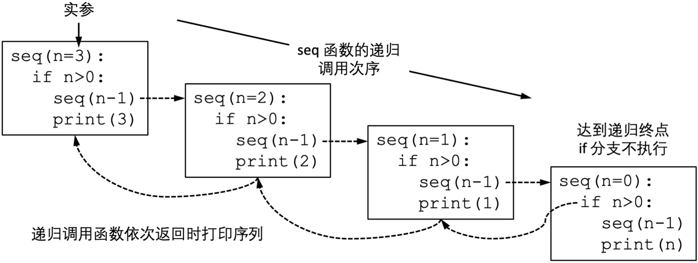
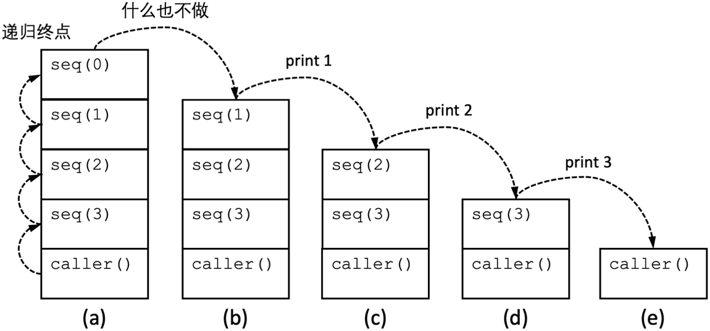

原文出处:本文由博客园博主andyou提供。
原文连接:https://www.cnblogs.com/mochou/p/11751555.html
原文连接:https://www.cnblogs.com/mochou/p/11751555.html
本小节的示例比较简单，因为在每次递归过程中原问题仅缩减为单个更小的问题。这样的问题往往能够用简单循环解决。这类递归算法的函数调用图是链状结构。这种递归类型被称为“单重递归”(single recursion)。
示例一：编写函数seq(n)，打印从1到n的数字。
可以很容易地用循环解决这个问题：
def seq(n):
i = 1
while i<=n:
print(i)
i += 1
也可以使用递归版本，这是本节的主要程序风格：
def seq(n):
if n>0:
seq(n-1)
print(n)
在递归版本的seq()函数中，参数等于0时函数什么也不做直接返回。当参数为正整数时[1]，将参数减1后调用自身，待调用返回后打印参数。当调用seq(3)时，该函数会生成如下的调用链seq(3) > seq(2) > seq(1) > seq(0)，当调用链依次返回时，seq(3) - seq(1)的print语句会逆序执行，完成打印序列的目的。如图 2.10所示。 
图 2.10 seq函数的递归调用次序

图 2.11 seq的调用栈变化示意图
在实际编写代码时，不会使用这样的方式打印序列[2]。因为对于本问题来说，递归版本的效率很低。本小节示例的目的是让读者了解递归函数的执行流程和基本语法形式。
[1] 为了简单起见，假定函数只会接收到非负整数作为参数。
[2] 据传这是世纪之交某跨国大型IT企业的应届生招聘试题。原题是“编写函数，不使用局部变量打印1到n”。当时的很多毕业生对此束手无策。从这个角度上该问题的递归版本还是有意义的。时至今日这已是平常技巧，已不常见于企业面试题。
这是一本很有趣很有趣的Python入门书，墙裂推荐。